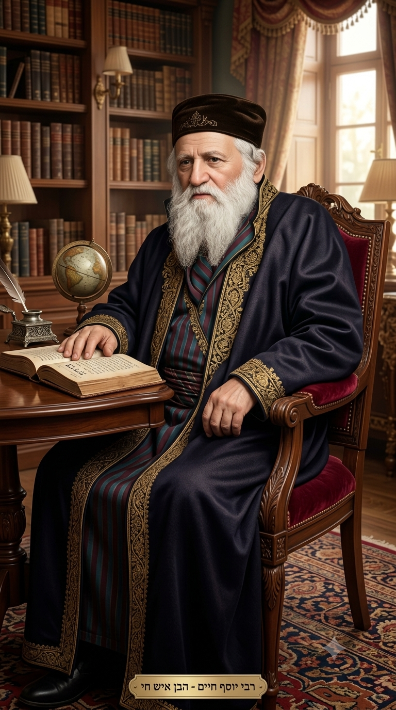
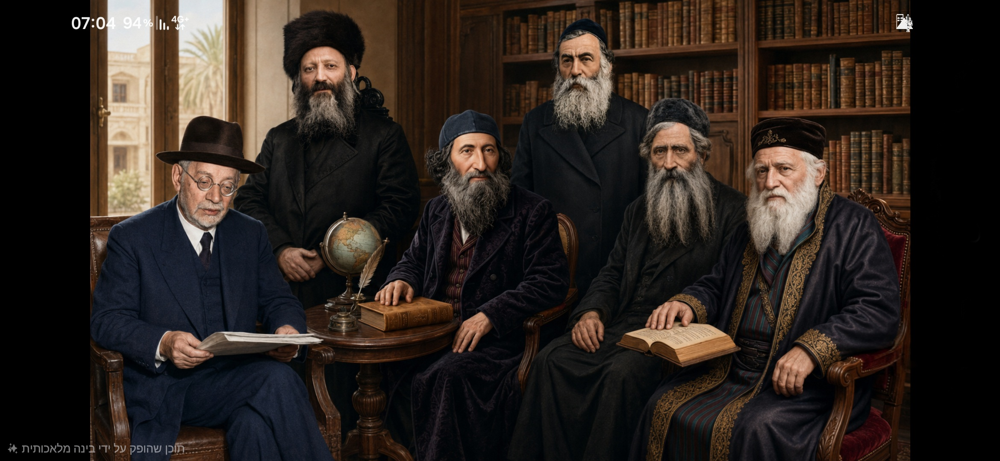
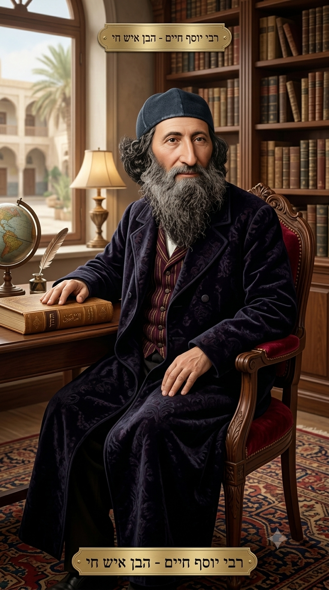
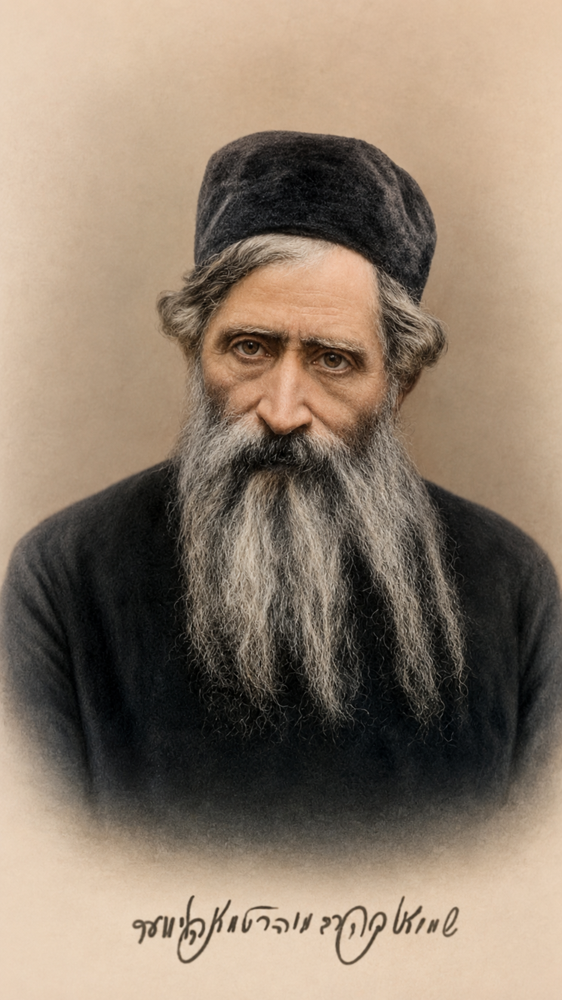
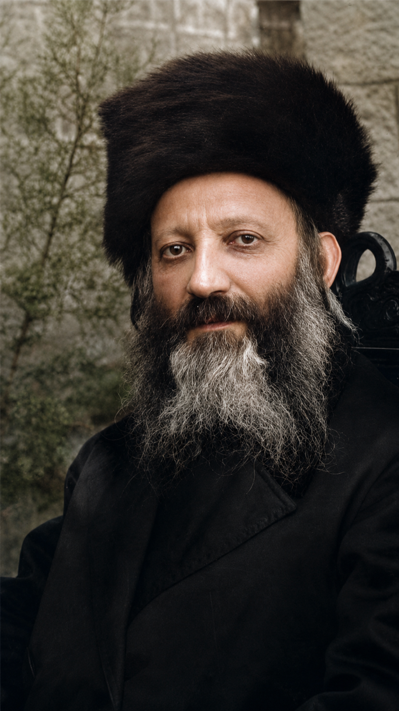
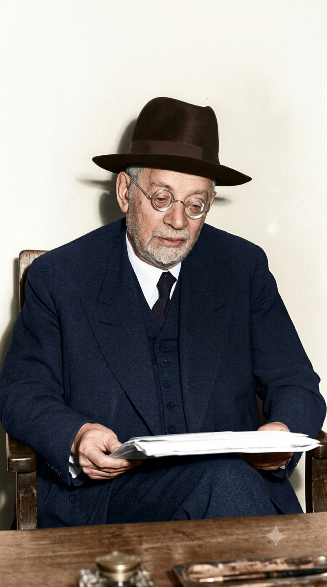

הרב יהודה אלקלעי
ממבשרי השיבה המעשית לציון, שקרא לארגון ציבורי, עלייה ופעולה לקראת הגאולה.
לעמוד הרבאתר מחקרי־חזותי על הרבנים שהניחו את יסודות הציונות הדתית, ועל ההגות שחיברה בין נאמנות לתורה, שיבת ציון, אחריות ציבורית ופעולה לאומית מעשית.
הציונות הדתית נולדה מתוך תפיסה נועזת לזמנה: שיבת עם ישראל לארץ ישראל איננה רק חלום עתידי או המתנה לנס, אלא משימה היסטורית שיש לפעול למענה. הרבנים המייסדים ראו בעלייה, בהתיישבות, בארגון קהילתי ובבניית מוסדות ציבוריים חלק מתהליך רוחני רחב.
הגאולה איננה מבטלת את הפעולה האנושית — אלא דורשת אותה.

לחיצה על התמונה תפתח אותה בחלון צף.

ממבשרי השיבה המעשית לציון, שקרא לארגון ציבורי, עלייה ופעולה לקראת הגאולה.
לעמוד הרב
הוגה מרכזי של גאולה אקטיבית, יישוב הארץ ועבודת אדמה כחלק מבניין האומה.
לעמוד הרב
ממנהיגי חיבת ציון, שחיבר בין רבנים, קהילות והתיישבות יהודית בארץ ישראל.
לעמוד הרב
מייסד תנועת המזרחי, שהעניק לציונות הדתית מסגרת פוליטית, חינוכית וארגונית.
לעמוד הרב
המעצב הרוחני הגדול של ההגות הדתית־ציונית, שראה בתחייה הלאומית תהליך גאולי.
לעמוד הרב
ממנהיגי המזרחי בארץ ישראל, מחותמי מגילת העצמאות ושר הדתות הראשון.
לעמוד הרבהאתר כולל עמוד נפרד לכל רב, עמוד אטימולוגיה מפורקת, פרק הגות נרחב, ציר זמן ומקורות להמשך מחקר. התמונות נשמרות בתיקיית images/, ועמודי הרבנים בתיקיית rabbis/.